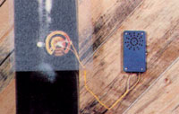
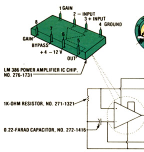
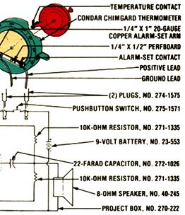

This device will warn you should a chimney fire occur.
Chimney fires are of almost constant concern to everyone who heats with wood. The residues of incomplete combustion that are produced in most woodstoves can form heavy deposits that sometimes ignite to create chimney- (or home-) destroying infernos. On page 114 of this issue, scientists Jay Shelton and Cathleen Barczys discuss the research they're now doing (in cooperation with MOTHER) in order to evaluate several devices which are claimed to reduce creosote formation. Ultimately, woodstoves will have to become safer, cleaner, and more efficient if they're to maintain their popularity in an environmentally concerned world. But, in the meantime, it's up to the individual owner to operate his or her stove in the safest manner possible.
At least one smoke alarm and fire extinguisher should be strategically located in every home that has a woodstove. (In fact, such devices can be lifesavers in any dwelling, regardless of how it's heated.) A smoke detector can provide an early-warning even before an actual blaze gets started, and-by doing so-helps to protect the building's occupants from the number one fire danger . . . smoke inhalation.
What's more, woodstove owners can employ other potentially lifesaving devices. Several companies now market alarms that signal the overheating of a woodburning appliance's flue . . . giving an early warning of the onset of a chimney fire. The commercial units run up to nearly $80 (although some are a good bit less expensive), but any handyperson who enjoys tinkering (and, perhaps, saving a few dollars at the same time) will find that building a flue alarm can be an easy, enjoyable project.
MOTHER researcher Emerson Smyers put together the device you see in the accompanying photo and illustration, using readily available components, for under $25. The alarm is self-contained (its power is drawn from a 9-volt battery) and signals overheating with a loud buzz. We purchased the thermometer portion of it from the Condar Company, Dept. TMEN, Box 6, Hiram, Ohio 44234 (for $11.95, plus $1.00 shipping), and all the electronic components were obtained from a nearby Radio Shack outlet.
First, Smyers modified the thermometer by adding a pair of automotive ignition points to the dial. One contact was silver-soldered (regular solder might not stand up to the heat of the flue) to the °F pointer, and the other was attached to an arm (with a small, insulating piece of circuit board between the two components) which pivots under the bolt in the center of the thermometer. The second contact, then, can be set to a specific temperature, and when the first contact touches it, the circuit will be completed . . . triggering the alarm. While all this is going on, of course, Condar's Chimgard still serves its original purpose: allowing you to monitor flue temperature easily.
Emerson obtained the circuit diagram for the electronic portion of the alarm from a Radio Shack publication ("Engineer's Notebook: Integrated Circuit Applications", Catalog No. 276-5001, $1.99) which describes an integrated-circuit-chip audible alarm. The tiny amplifier consists of seven electronic components, which can easily be soldered to a piece of perforated circuit board and located in a plastic box (which, along with appropriate plug-in connectors, is also available from Radio Shack).
MOM's research director included a normally open, momentary, push-button switch, which can be used to test the battery's condition. It's wired across the two plugs leading to the thermometer, so that the circuit is closed whenever the button is pushed.
Assembling the device should take no more than a couple of hours. You might start by modifying the thermometer. This procedure involves silver-soldering an automobile ignition contact to the device's pointer (make sure the new piece doesn't interfere with the indicator's motion) and fabricating the alarm-set arm from a 1/4" X 1" strip of 20-gauge copper.
Emerson attached the insulating circuit board to the arm with a pair of small pop rivets, and then secured the alarmset contact with a little screw and nut. (Be certain that no part of the contact touches the frame of the thermometer, or the alarm will ring constantly.) Then the positive lead must be silver-soldered to the alarm-set contact, and the ground should be screwed down-along with the alarm-set arm-beneath the central pivot bolt.
Now, prepare the circuit board-as shown-by soldering all the components to the perfboard, using a low-wattage pencil iron and small-diameter, rosincore solder (ask your Radio Shack dealer to help you choose it if you're unsure). Don't apply heat any longer than necess ary when you're soldering the electronic parts (particularly when securing the IC chip and the capacitors), since excessive temperatures can damage the sensitive components.
Next, drill two 3/8" holes in one end of the plastic box to accommodate the two plug-in sockets. (In addition, you'll have to bore four 3/32" holes for the screws that secure the sockets.) A series of 1/8" noise-outlet holes must also be drilled in the cover (in a circular array, as shown in the photo), but the speaker itself can simply be silicone-sealed to the inside of the cover. Emerson chose to locate the battery test switch on the side of the box, and it too is mounted in a hole (5/32", in this case).
To complete the alarm unit, just wire the switch, circuit board, battery, and plug-in sockets as shown in the accompanying schematic. You can keep the components from rattling around by slipping the circuit board into the slots provided in the box and separating the battery from the remainder of the parts with two more sections of perfboard.
We recommend that you screw the thermometer to the stovepipe (using tabs attached to the device through the holes that originally held the handle), since-as the Condar folks point out-high temperatures might weaken the unit's magnetic hold. (A location about two feet above the stove usually works well.) It's also a good idea to install the alarm box some distance from the stovepipe, to protect it and its innards from heat. Finally, set the alarm contact at a position which is slightly above your usual maximum operating temperature, light a hot fire, and make sure the device works.
A flue alarm such as this one should provide you and your family with an extra measure of security against chimney fires. But there's no substitute for proper stove maintenance . . . so inspect your chimney for heavy creosote deposits reg. ularly, have it cleaned as needed, check the batteries in both your flue and your smoke alarm periodically, and follow the tips for safe and clean woodburning presented in MOTHER.
|
 |
 |
 |